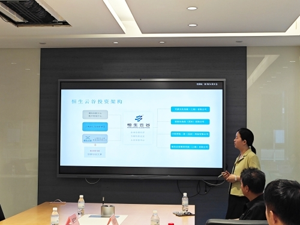
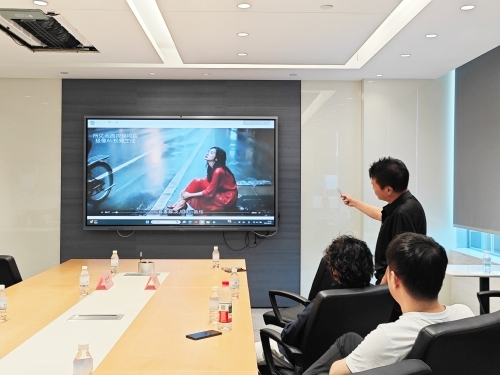
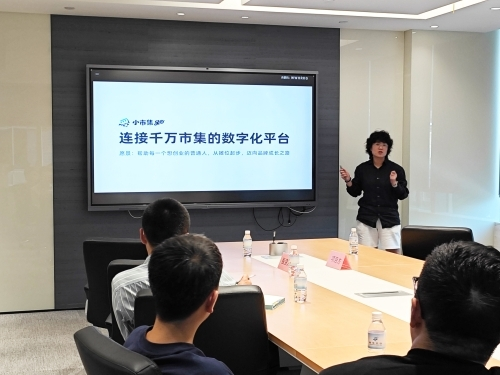
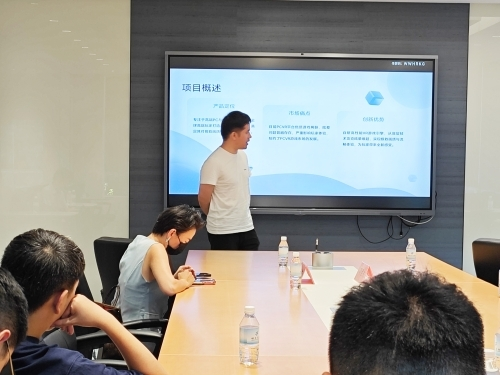

8月28日下午，上海虹桥商务区恒生云谷国际创新中心内，第17期“恒创中国”投融资路演活动在静谧而专注的氛围中如期举行。尽管规模紧凑，却更凸显出内容的高度聚焦与沟通的精准高效。三个路演项目紧密围绕生活实际展开，从AI赋能女性生活、VR游戏体验革新，到市集创业数字化支持，无不展现出科技与日常深度融合的可能性与人文温度。

本次活动虽规模精简，却丝毫不影响项目展示的精彩程度与投资人互动的质量。极像AI以“生活化AI”为核心理念，致力于打造服务女性全场景的AI伴侣，其图像与视频生成能力令现场眼前一亮；另一款自研引擎的VR游戏项目，直面行业眩晕与画质痛点，带来沉浸式娱乐的新可能；而“小市集go”则聚焦地摊经济数字化，通过平台化解摊主报名难、押金风险高等痛点，助力轻创业者稳健起步。

适度的规模，反而为交流营造出更自由、更深入的空间。创业者不再局限于逐页演绎PPT，投资人也能更从容地发问、建议甚至现场推演商业模式。现场不见嘈杂喧哗，唯有专注的倾听与有价值的对话，每位参与者都在专注而舒适的氛围中收获了超出预期的启发与连接。

令人惊喜的是，本次活动还吸引了临时慕名而来的项目方。尽管没有准备完整的商业计划书，他们依然热情洋溢地阐述了自己的创业理念与产品雏形，并在现场与投资人、其他创业者展开了积极互动。交流不仅限于会场内，更延续至线下联系方式的互换与后续合作的初步探讨。多位参会者表示，这种自由而开放的氛围反而促成了更真实的对话与更深入的连接，收获远超预期，并对未来恒创中国的活动充满期待。

恒创中国始终致力于为早期科技项目搭建落地成长的桥梁。本期路演再次印证，真正的价值不在于规模之大，而在于项目本身的成色与交流的深度。我们期待这些贴近生活、务实创新的项目，能够更快走进大众视野，也盼望更多投资人、创业者在这个自由而真诚的平台上，携手共创更多可能。
期待下一期，我们再相聚！